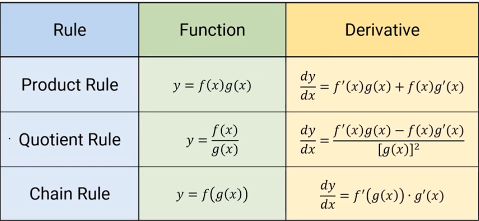

How to we select what rule to use?

Some problems may look like they require the chain rule, but look closely, they can simplify to an easier method
Try to use the simplest rule you can
Derivatives can still be undefined, don't get too caught up in the rules to realize this